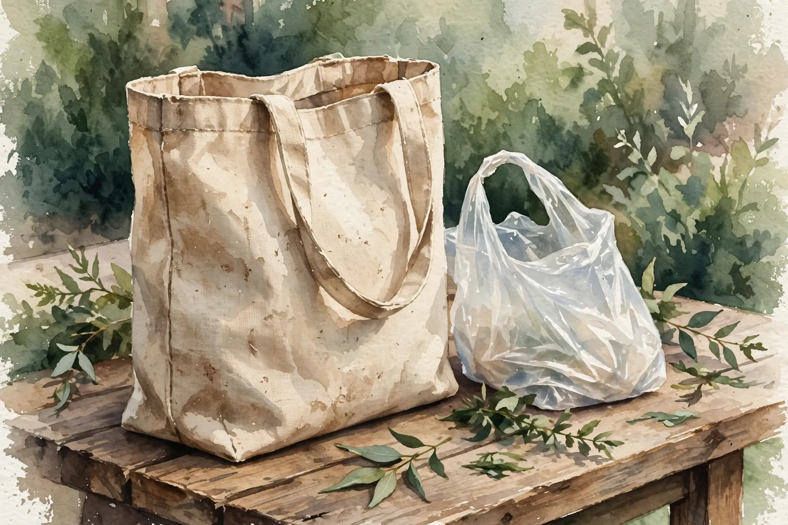

Economist Rebecca Taylor turned California's patchwork of bag rules into a natural experiment using retail scanner data. Forty million pounds of carryout bags disappeared each year, replaced by 12 million pounds of trash bags shoppers now had to buy.

Few villains unite everyone the way the plastic grocery bag does. It blows out of truck beds, tangles in trees, and shows up in photos of sea turtles. Banning it feels like the rare policy that is both popular and obviously right, which is why hundreds of American cities and counties did it, and why California took the whole state in 2016.
Economist Rebecca Taylor measured what happened next. Between 2008 and 2015, California jurisdictions adopted bag rules in a staggered patchwork. Taylor treated that patchwork as a natural experiment, measuring what shoppers bought in stores with rules versus stores still waiting, before and after.
On the target itself, the bans did exactly what they promised, and carryout bag use collapsed. But shoppers still needed something to line their bins and pick up after their dogs, and a large share of them had been meeting that need for free. Taylor estimates 12 to 22 percent of carryout bags were being reused as trash bags before the rules arrived, so when the free liner vanished, households did the obvious thing: they bought liners.
The numbers are stark, and they show no sign of fading. In covered stores, small trash-bag sales jumped 120 percent, medium 64 percent, tall kitchen 6 percent, and the increase did not fade. Taylor's event-study estimates show small-bag sales still running roughly two-thirds higher than in not-yet-treated stores eight or more months after a rule took effect. This was not a brief adjustment; it was a new equilibrium.
In weight, the arithmetic is brutal: under the rules, about 40 million pounds per year of plastic carryout bags disappeared, while increased trash-bag purchases added back about 12 million pounds per year. Thirty percent of the plastic savings leaked into a thicker, more plastic-intensive product. Taylor's summary line: the rules shifted consumers toward fewer but heavier bags.
Behind it sits an almost insultingly simple mechanism. The carryout bag was never single-use for a large minority of shoppers: it was a free trash bag with a grocery trip attached. Policy evaluations that count only the eliminated carryout bags, and ignore what replaced them, overstate the welfare gains. That, stated dryly, is the paper's actual conclusion.
Bag rules push shoppers toward reusables, and the reusable hero of this story, the cotton tote, has its own ugly math. In 2018, Denmark's Environmental Protection Agency published a life-cycle assessment tracking 14 bag types from raw material to disposal across 15 environmental indicators. Before reuse entered the picture, the thin plastic carryout bag had the lowest impact for most indicators.
Denmark's reuse breakevens: a paper bag needs 43 grocery trips to match the plastic bag, conventional cotton 7,100, organic cotton 20,000. At two trips a week, the organic tote pays off in 192 years. A later Norwegian study landed far lower, 12 to 13 uses for a light rainfed organic cotton bag on climate alone, and an independent recalculation put it near 200. Honestly summarized: the exact breakeven is assumption-sensitive while the ranking is stubborn: thin plastic wins per use, and everything else must be reused a great deal to catch up.
Two caveats travel with the Danish numbers, starting with the headline itself. That 20,000 figure is the maximum across all 15 indicators, set by a single category, ozone depletion; the authors' own footnote drops organic cotton to between 150 and 3,800 uses without it. And the Danish study is a government report, not a peer-reviewed journal paper, which is why it plays a supporting role here rather than the lead.
The best case for bag bans does not run through carbon or plastic weight; it runs through litter. An estimated 4.8–12.7 million metric tons of plastic entered the oceans in 2010 alone, and thin film bags are among the most mobile pieces of it. A life-cycle assessment counts production and disposal, not the bag in the sea turtle, and Taylor's scanner data counts pounds purchased, not bags in waterways. Denmark's Society for Nature Conservation made exactly this objection to the Danish report, arguing it weighted categories badly and ignored what bags do when they escape the waste system.
This critique has real force, because if the goal is fewer bags in waterways, a ban can be worth it even with ugly leakage math, since litter is a local, visible harm that neither life-cycle models nor scanner data are built to capture. Denmark itself illustrates the limit: its authors judged littering negligible in a country with near-total waste collection, a conclusion that falls apart on coastlines with open dumps.
There is a design lesson inside the leakage: Taylor's rules were bans and mandates, while a separate line of research finds straight fees have a cleaner record. A Washington, DC 5-cent bag tax cut disposable bag use sharply while an equivalent bonus for bringing reusables barely moved behavior. Taylor's own 2022 follow-up found a second leakage channel: bans pushed some shoppers to buy food at unregulated stores or eat at restaurants instead. Which instrument you pick matters as much as the target.
Here are the honest boundaries. Taylor's window is California, 2008 to 2015, a specific mix of local bans and fees; differently designed rules may leak less, and fees look better than bans in the companion literature. No formal replication exists yet, though the Chicago results point the same way. Danish breakevens swing by orders of magnitude with different cotton data, and Denmark assumed incineration-heavy disposal that flatters anything burnable. None of this proves bag bans are net-negative or that plastic bags are good. It proves the policy leaks in measurable ways the slogans skip, and that the tote is not the simple moral upgrade it appears to be.
Two uncomfortable findings, and they point the same direction. First, when California removed the thin plastic carryout bag, shoppers replaced nearly a third of the eliminated plastic with trash bags they then had to buy, because a large minority of those carryout bags had never been single-use. Second, the reusable alternative needs heroic reuse counts to beat the plastic bag it replaced on production footprint. That bag by your door is not saving the planet by existing. Only reuse does that, and only a great deal of it, while the policy that forced the switch quietly restocked the plastic through the trash-bag aisle.
Stop acquiring tote bags: the greenest bag is the one you already own. Use what you have until it falls apart, for groceries and then as bin liners, which the Danish authors rank above recycling for light bags. If you must buy, pick light bags and actually reuse them: a polypropylene tote needs about ten grocery trips to offset its manufacturing. Where these policies are debated, know the evidence favors fees over bans: D.C.'s 5-cent tax cut disposable bag use sharply, while an equivalent bonus barely moved behavior. Keep lining your bins with the thin bags you still have, since that was always their second life.